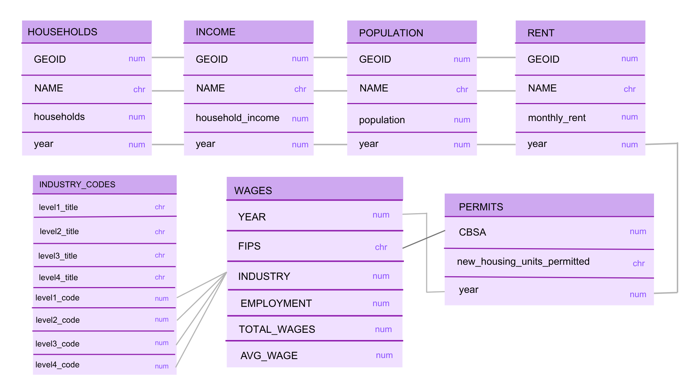
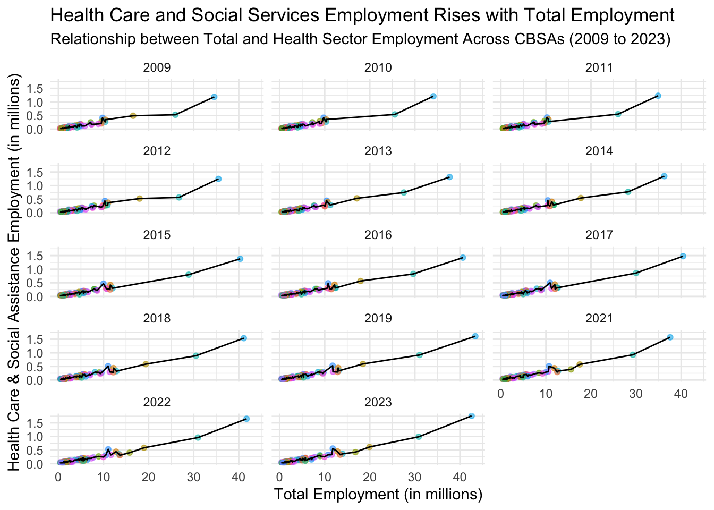
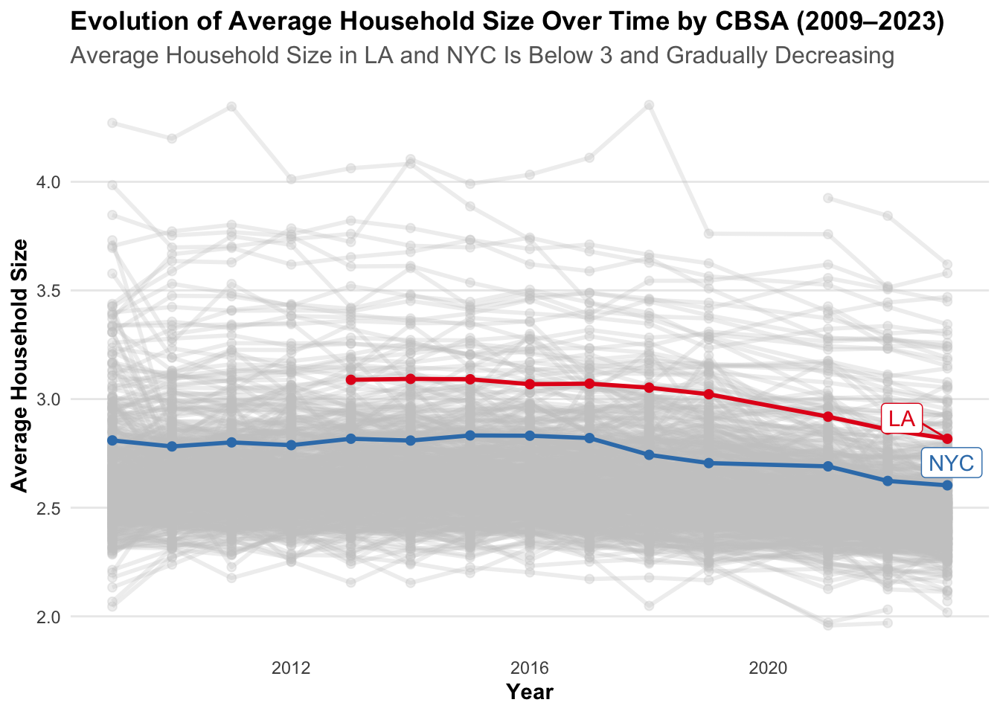
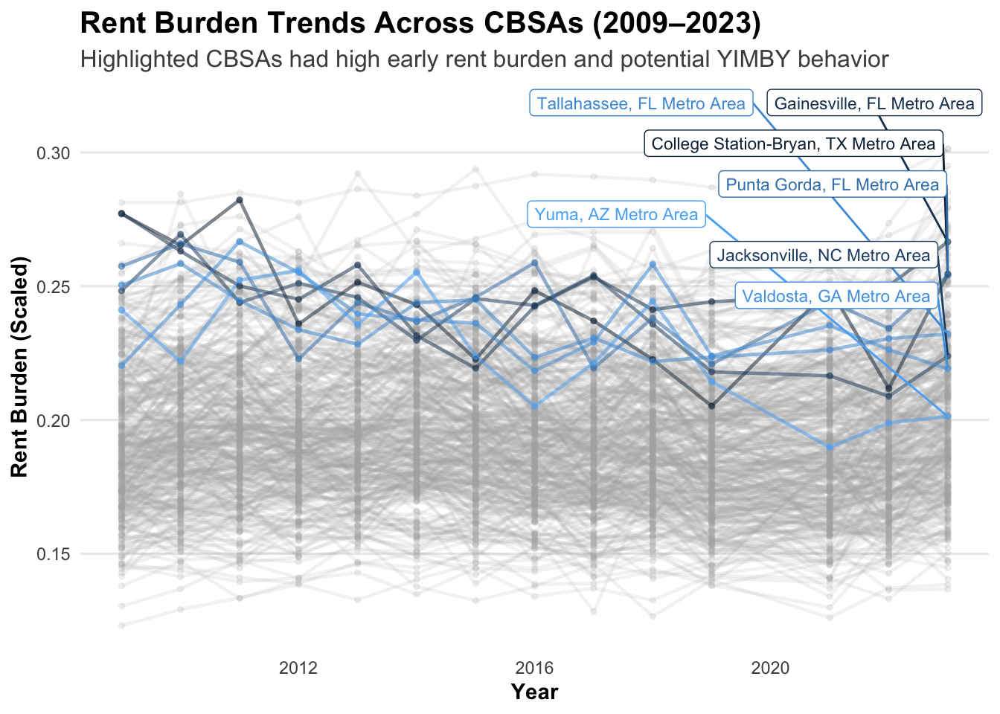
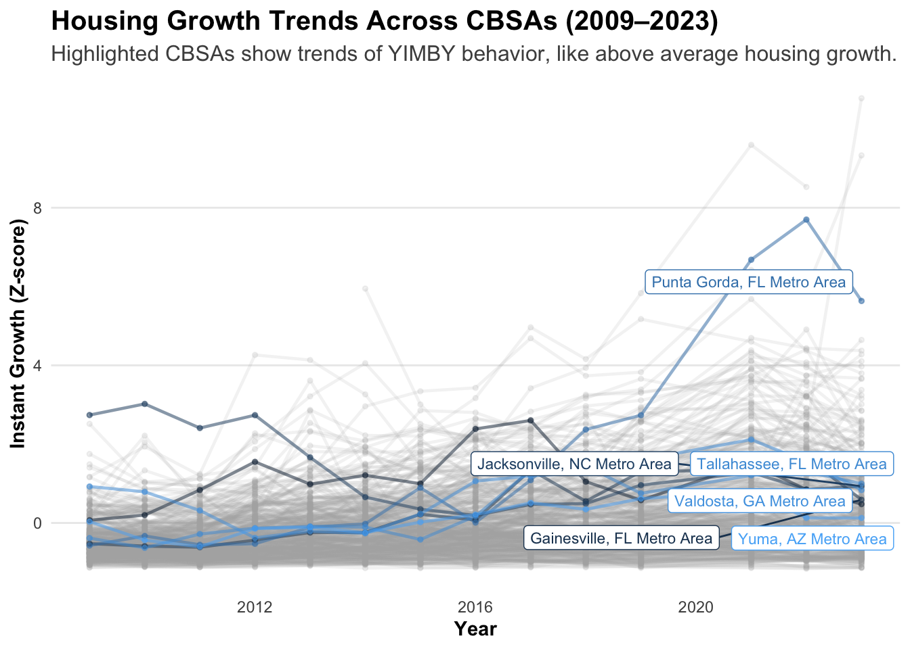
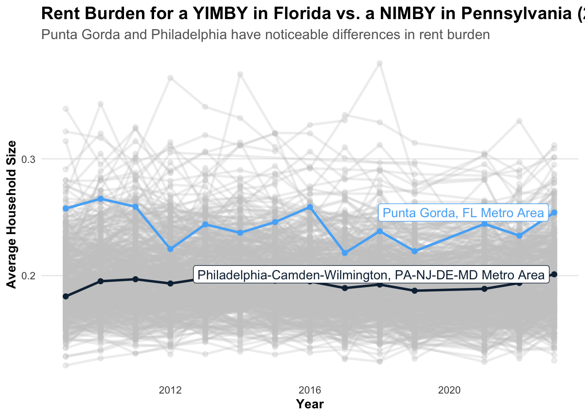

In this report, housing data from the U.S. Census Bureau and Bureau of Labor Statistics are utilized to assess the housing situation in the New York Metropolitan Area. Using R packages such as ggplot2, dplyr, and DT, we created data visualizations and interactive tables to explore patterns in rent burden, household income, and housing growth. These tools allowed us to better understand how housing affordability and population dynamics have evolved over time, providing clearer insights into the challenges and opportunities facing the region’s housing market.
library(httr2)library(rvest)get_bls_qcew_annual_averages <-function(start_year=2009, end_year=2023){ fname <-glue("bls_qcew_{start_year}_{end_year}.csv.gz") fname <-file.path("data", "mp02", fname) YEARS <-seq(start_year, end_year) YEARS <- YEARS[YEARS !=2020] # Drop Covid year to match ACSif(!file.exists(fname)){ ALL_DATA <-map(YEARS, .progress=TRUE, possibly(function(yy){ fname_inner <-file.path("data", "mp02", glue("{yy}_qcew_annual_singlefile.zip"))if(!file.exists(fname_inner)){request("https://www.bls.gov") |>req_url_path("cew", "data", "files", yy, "csv",glue("{yy}_annual_singlefile.zip")) |>req_headers(`User-Agent`="Mozilla/5.0 (Macintosh; Intel Mac OS X 10.15; rv:143.0) Gecko/20100101 Firefox/143.0") |>req_retry(max_tries=5) |>req_perform(fname_inner) }if(file.info(fname_inner)$size <755e5){warning(sQuote(fname_inner), "appears corrupted. Please delete and retry this step.") }read_csv(fname_inner, show_col_types=FALSE) |>mutate(YEAR = yy) |>select(area_fips, industry_code, annual_avg_emplvl, total_annual_wages, YEAR) |>filter(nchar(industry_code) <=5, str_starts(area_fips, "C")) |>filter(str_detect(industry_code, "-", negate=TRUE)) |>mutate(FIPS = area_fips, INDUSTRY =as.integer(industry_code), EMPLOYMENT =as.integer(annual_avg_emplvl), TOTAL_WAGES = total_annual_wages) |>select(-area_fips, -industry_code, -annual_avg_emplvl, -total_annual_wages) |># 10 is a special value: "all industries" , so omitfilter(INDUSTRY !=10) |>mutate(AVG_WAGE = TOTAL_WAGES / EMPLOYMENT) })) |>bind_rows()write_csv(ALL_DATA, fname) } ALL_DATA <-read_csv(fname, show_col_types=FALSE) ALL_DATA_YEARS <-unique(ALL_DATA$YEAR) YEARS_DIFF <-setdiff(YEARS, ALL_DATA_YEARS)if(length(YEARS_DIFF) >0){stop("Download failed for the following years: ", YEARS_DIFF, ". Please delete intermediate files and try again.") } ALL_DATA}WAGES <-get_bls_qcew_annual_averages()
Extra Credit #1: Data Relationship Diagram
 The main connection between all of the 7 different datasets is the year, connecting 6 of the datasets. Finding a potential connection for the data set “INDUSTRY_CODES” was more particularly difficult.
Task 2: Multi-Table Questions
Which CBSA (by name) permitted the largest number of new housing units in the decade from 2010 to 2019 (inclusive)?
Data Table for finding the CBSA with the largest # of new housing units:
Click here to show the code
library(stringr)library(DT)format_titles <-function(df){colnames(df) <-str_replace_all(colnames(df), "_", " ") |>str_to_title() df}PERMITS |>group_by(CBSA) |>filter(year %in%c(2010,2011,2012,2013,2014,2015,2016,2017,2018,2019)) |>#we want years 2010 to 2019 inclusivesummarise(largest_number_units =sum(new_housing_units_permitted,na.rm =TRUE)) |>#summing them uparrange(desc(largest_number_units)) |>slice_max(largest_number_units) |>#grabbing the largest number of new housing units from 2010 to 2019")format_titles() |>datatable(options=list(searching=FALSE, info=FALSE))
Data Table for finding the CBSA title:
Click here to show the code
# Convert CBSA to CBSA titleinstall.packages("totalcensus")
The downloaded binary packages are in
/var/folders/1n/1d826z2x54zbr4r34sn13svm0000gn/T//RtmpQWWWRp/downloaded_packages
Houston, Texas (or CBSA Number 26420) permitted the largest number of new housing units from the decade of 2010 to 2019.
In what year did Albuquerque, NM (CBSA Number 10740) permit the most new housing units? Hint: There is a Covid-19 data artifact here that may trip you up if you do not look at your answer closely.
2022 permitted the most new housing units in Albuquerque, NM (CBSA 10740), once the COVID-era reporting artifact in 2021 is adjusted for.
Which state (not CBSA) had the highest average individual income in 2015? To answer this question, you will need to first compute the total income per CBSA by multiplying the average household income by the number of households, and then sum total income and total population across all CBSAs in a state. With these numbers, you can answer this question.
Hint: The following function can be used to extract the principal state for a CBSA. Some CBSAs split across multiple states, e.g., the NYC CBSA continuing into NJ and CT, so this picks the one that appears first in the name.
Click here to show the code
#average household income per CBSAavg_household_income_by_cbsa_2015 <- INCOME |>filter(year ==2015) |>group_by(GEOID) |>summarize(average_household_income =mean(household_income))# Households in 2015 by CBSAhouseholds_2015 <- HOUSEHOLDS |>group_by(GEOID) |>filter(year ==2015)# Multiplying average household income by number of householdstotal_income_per_CBSA_2015 <-full_join(avg_household_income_by_cbsa_2015, households_2015, by ="GEOID") |>group_by(GEOID) |>summarize(total_income_per_CBSA = average_household_income*households)#populationpopulation_2015 <- POPULATION |>filter(year ==2015) |>group_by(GEOID)#Final Table, looking for the average individual income per state in 2015full_join(population_2015, total_income_per_CBSA_2015, by ="GEOID") |>mutate(state =str_extract(NAME, ", (.{2})", group=1)) |># this particular line is provided in the hint for the questiongroup_by(state) |>summarize(total_population =sum(population,na.rm =TRUE), total_income_per_state =sum(total_income_per_CBSA,na.rm =TRUE)) |>group_by(state) |>summarize(average_individual_income_2015 = total_income_per_state/total_population) |>slice_max(average_individual_income_2015, n=5) |>format_titles() |>datatable(options=list(searching=FALSE, info=FALSE))
The District of Columbia (DC) had the highest average individual income in 2015.
Data scientists and business analysts are recorded under NAICS code 5182. What is the last year in which the NYC CBSA had the most data scientists in the country? In recent, the San Francisco CBSA has had the most data scientists.
Click here to show the code
og_t2 <- WAGES |>filter(INDUSTRY=="5182") |>group_by(YEAR,FIPS) |>summarize(total_employment =sum(EMPLOYMENT)) |>ungroup() |>group_by(YEAR) |>filter(total_employment ==max(total_employment))#this part here is from the hint given.t1 <- POPULATION |>mutate(std_cbsa =paste0("C", GEOID))t2 <- og_t2 |>mutate(std_cbsa =paste0(FIPS, "0"))t3 <-inner_join(t1, t2, join_by(std_cbsa == std_cbsa, year == YEAR))###t3 |>filter(FIPS =="C3562")|>arrange(desc(year)) |>format_titles() |>datatable(options=list(searching=FALSE, info=FALSE))
The last year that NYC (CBSA 35620)had the most data scientists in the country was in 2015.
What fraction of total wages in the NYC CBSA was earned by people employed in the finance and insurance industries (NAICS code 52)? In what year did this fraction peak?
Click here to show the code
# First, we must calculate the total wages in the NYC CBSA.NYC_total_wages <- WAGES |>filter(FIPS =="C3562") |>#filter to the NYC CBSA codegroup_by(INDUSTRY) |>summarize(sum_of_wages=sum(TOTAL_WAGES,na.rm =TRUE))# Here we set a variable fo the total wages in the NYC area.total_nyc_wages <-sum(NYC_total_wages$sum_of_wages)
Click here to show the code
# Here, we are finding the proportion of the wages for each industry. NYC_total_wages |>group_by(INDUSTRY) |>summarize(fraction_of_total_wages_in_nyc=sum_of_wages/total_nyc_wages) |>filter(INDUSTRY ==52) |>#Then we filter it for specifically the finance / insurance industries.format_titles() |>datatable(options=list(searching=FALSE, info=FALSE))
Roughly 4.087%of total wages in the NYC CBSA was earned by people employed in the finance and insurance industries.
Click here to show the code
#Looking for the year the fraction peaked now. (2nd Part of the Question)#First we want to find the total wages per year in NYC CBSA area.total_wages_by_year_NYC <- WAGES |>filter(FIPS =="C3562") |>#filter to the NYC CBSA codegroup_by(YEAR) |>summarize(sum_of_total_wages_in_NYC_by_year =sum(TOTAL_WAGES, na.rm =TRUE)) |>ungroup()total_wages_by_year_and_industry_NYC <- WAGES |>filter(FIPS =="C3562") |>group_by(YEAR, INDUSTRY) |>summarize(sum_of_wages_in_NYC_by_industry =sum(TOTAL_WAGES, na.rm =TRUE)) |>filter(INDUSTRY ==52) |>ungroup()inner_join(total_wages_by_year_NYC, total_wages_by_year_and_industry_NYC, by="YEAR") |>group_by(YEAR) |>summarize(fraction_of_wages = sum_of_wages_in_NYC_by_industry/sum_of_total_wages_in_NYC_by_year) |>arrange(desc(fraction_of_wages)) |>format_titles() |>datatable(options=list(searching=FALSE, info=FALSE))
This fraction peaked in 2014 with a leading percentage of 4.6%.
Task 3: Initial Visualizations
1. The relationship between monthly rent and average household income per CBSA in 2009.
Click here to show the code
library(ggplot2)rent_income_2009 <-inner_join(RENT, INCOME, by =c("year", "GEOID", "NAME")) |>filter(year ==2009)ggplot(rent_income_2009, aes(x=household_income, y = monthly_rent)) +geom_point(color ="gray70",size =2, alpha =0.8) +geom_smooth(method ="lm", se =FALSE) +scale_color_brewer(palette ="Set2") +labs(title ="Higher Household Incomes Are Associated with Higher Rents",subtitle ="Monthly Rent vs. Average Income per CBSA (2009)",x ="Average Household Income ($)",y ="Monthly Rent ($)" ) +theme_minimal()
Monthly rent and average household income in 2009 seem to have a strong positive relation, clustering more around the middle. All the points on this scatterplot seem to follow this line with a positive slope.
2.The relationship between total employment and total employment in the health care and social services sector (NAICS 62) across different CBSAs. Design your visualization so that it is possible to see the evolution of this relationship over time.
Click here to show the code
total_employment_by_year <- WAGES |>group_by(YEAR, FIPS) |>summarize(total_employment =sum(EMPLOYMENT))t4 <- WAGES |>filter(INDUSTRY ==62) |>group_by(YEAR,FIPS) |>summarize(total_employment_health_social =sum(EMPLOYMENT)) |>inner_join(total_employment_by_year, by =c("YEAR", "FIPS")) |>slice_max(total_employment_health_social, n=100)ggplot(t4, aes(x = total_employment/1000000, y = total_employment_health_social/1000000)) +geom_point(aes(color = FIPS), alpha =0.6, show.legend =FALSE) +geom_line() +facet_wrap(~ YEAR, ncol =3) +scale_x_continuous(labels = scales::comma) +scale_y_continuous(labels = scales::comma) +labs(x ="Total Employment (in millions)",y ="Health Care & Social Assistance Employment (in millions)",subtitle ="Relationship between Total and Health Sector Employment Across CBSAs (2009 to 2023)",title ="Health Care and Social Services Employment Rises with Total Employment") +theme_minimal()

The relationship between total employment and employment in the heath care and social services sector across different CBSAs seems to have a strong positive relationship throughout the years of 2012 to 2023. The dots represent different CBSAs (I included the top 100 regions) and all the graphs seem to agree on a similar upward slope for the relationships between the X and Y.
3.The evolution of average household size over time. Use different lines to represent different CBSAs.
Extra Credit #2: gghighlight package
Click here to show the code
total_households <- HOUSEHOLDS |>group_by(year, GEOID) |>summarize(total_households_by_year_and_geoid =sum(households))total_population <- POPULATION |>group_by(year, GEOID) |>summarize(total_pop_by_year_and_geoid =sum(population))t5 <-inner_join(total_households, total_population, by =c("year", "GEOID")) |>group_by(year, GEOID) |>mutate(avg_household_size = total_pop_by_year_and_geoid/total_households_by_year_and_geoid) |>mutate(CBSA_name =case_when( GEOID ==35620~"NYC", GEOID ==31080~"LA",TRUE~paste("Other (", GEOID, ")", sep="")))library(gghighlight)ggplot(t5, aes(x = year, y = avg_household_size, color = CBSA_name, group = CBSA_name)) +geom_line(linewidth =1) +geom_point(size =1.8) +gghighlight( CBSA_name %in%c("NYC", "LA"),label_key = CBSA_name,unhighlighted_params =list(color ="gray80", alpha =0.3) ) +scale_color_manual(values =c("NYC"="#377eb8", "LA"="#e41a1c")) +# custom colorslabs(subtitle ="Average Household Size in LA and NYC Is Below 3 and Gradually Decreasing",title ="Evolution of Average Household Size Over Time by CBSA (2009–2023)",x ="Year",y ="Average Household Size",color ="CBSA" ) +theme_minimal() +theme(plot.title =element_text(face ="bold", size =15),plot.subtitle =element_text(size =12, color ="gray40"),axis.title =element_text(face ="bold"),panel.grid.minor =element_blank(),panel.grid.major.x =element_blank(),legend.position ="none"# focus on labels from gghighlight )

LA (in red) and NYC (in blue) are highlighted in this graph against other CBSAs from 2009 to 2023. LA is slightly higher than NYC hovering above the 3 line in 2013, to being under the 3 threshold in 2023. NYC’s average household size has consistently remained under 3 throughout the displayed years, and it is nearing 2.5 with a slight decline ever since 2017. Applicably, LA’s household size has also seen a slight downward slope since 2017.
Task 4: Rent Burden
Click here to show the code
income_rent <-inner_join(RENT, INCOME, by =c("GEOID", "NAME", "year")) |>mutate(rent_burden = monthly_rent*12/household_income)#We want to find the mean and sd, we are using 2009 to standardize baseline <- income_rent |>filter(year ==min(year)) |>summarise(mean_burden =mean(rent_burden, na.rm =TRUE),sd_burden =sd(rent_burden, na.rm =TRUE))income_rent <- income_rent |>mutate(rent_burden_z = (rent_burden - baseline$mean_burden) / baseline$sd_burden)min_z <-min(income_rent$rent_burden_z, na.rm =TRUE)max_z <-max(income_rent$rent_burden_z, na.rm =TRUE)income_rent <- income_rent |>mutate(rent_burden_scaled = (rent_burden_z - min_z) / (max_z - min_z) *100)
1. Pick a single Metropolitan Area and see how rent burden has changed over time
I will be choosing Philadelphia, Pennsylvania, which has a CBSA code of 37980.
We can use the rent_burden and rent_burden_scaled columns to compare the values with each other to see how how rent burden changed over time in Philadelphia.
2. Highlight the Metro Areas highest and lowest with the highest and lowest rent burden.
Top 5 Metro Areas with the highest Rent Burdens
Click here to show the code
income_rent|>filter(str_detect(NAME, "Metro Area")) |>#We want to filter out the micro areas, we only want the metro areas. Using str_detect to filter this.slice_max(rent_burden_scaled, n=10) |>select(-rent_burden_z, -household_income, -monthly_rent) |>format_titles() |>datatable(options=list(searching=FALSE, info=FALSE))
Data Table for Instant Growth (housing units/population)
Top 5 highest instant growths:
Click here to show the code
POP_adj <- POPULATION |>rename(CBSA = GEOID)pop_permits <-inner_join(POP_adj, PERMITS, by =c("CBSA", "year"))p1 <- pop_permits |>group_by(CBSA) |>arrange(year, .by_group =TRUE) |>mutate(pop_growth_5yr = (population -lag(population, 5)) /lag(population, 5)) |># 5 year lookback for each CBSAungroup() |>mutate(instant_growth = new_housing_units_permitted / population) # Measures how much housing is being permitted relative to population that yearp1 |>slice_max(instant_growth, n=5) |>#Top 5format_titles() |>datatable(options=list(searching=FALSE, info=FALSE))
#Measures how much new housing is being permitted relative to population growth over the past 5 yearsp2 <- p1 |>mutate(rate_based_growth = new_housing_units_permitted / (pop_growth_5yr * population))p2 |>slice_max((rate_based_growth), n=5) |>#maximum 5format_titles() |>datatable(options=list(searching=FALSE, info=FALSE))
Negative z-score means that the housing growth is below average. Positive z-score means that the housing growth is above average. Z score of 0 means that the housing growth is average.
Click here to show the code
#here we are using z-score standardization, z = 0 is average housing growth# z > 0 above average housing growth# z < 0 below average housing growthp3 <- p2 |>mutate(instant_growth_z = (instant_growth -mean(instant_growth, na.rm =TRUE)) /sd(instant_growth, na.rm =TRUE),rate_based_growth_z = (rate_based_growth -mean(rate_based_growth, na.rm =TRUE)) /sd(rate_based_growth, na.rm =TRUE)) p3 |>slice_sample(n=10, replace =FALSE) |># random sample of rowsformat_titles() |>datatable(options=list(searching=FALSE, info=FALSE))
The Composite Score
Top 5:
Click here to show the code
# We are combining the standardized metrics to be considered equally.p4 <- p3 |>mutate( composite_score = (instant_growth_z + rate_based_growth_z) /2) p4 |>slice_max(composite_score, n=5) |>format_titles() |>datatable(options=list(searching=FALSE, info=FALSE))
# we are going to use the composite score from Task 5 and rent burden from Task 4. income_rent <- income_rent |>rename(CBSA = GEOID)r1 <-inner_join(income_rent, p4, by =c("CBSA", "year", "NAME")) #high rent burden early in the study period (2009 -2012)r2 <- r1 |>filter(year <2013& rent_burden_scaled >50) # CBSAs in the top 50 of the rent burden scaledpossible_yimbys <-unique(r2$CBSA)#had decrease in rent burden over study periodr3 <- r1 |>filter(CBSA %in% possible_yimbys) |>group_by(CBSA)|>filter(year ==min(year) | year ==max(year)) |>mutate(change_in_rent_burden = rent_burden[which.max(year)] - rent_burden[which.min(year)],first_year =min(year),last_year =max(year)) |>filter(change_in_rent_burden<0) |># only keep the negative differencesdistinct(CBSA, .keep_all =TRUE) # remove the duplicate rows nowpossible_yimbys <-unique(r3$CBSA)# population growth within the study periodr4 <- r1 |>filter(CBSA %in% possible_yimbys) |>group_by(CBSA) |>filter(year ==min(year) | year ==max(year)) |>mutate(change_in_population = population[which.max(year)] - population[which.min(year)],first_year =min(year),last_year =max(year)) |>filter(change_in_population >0)possible_yimbys <-unique(r4$CBSA)#Finally, we want to find the CBSAs with above average housing growth.r5 <- r1 |>filter(instant_growth_z >0) |># using the z score, above 0 to find the above average housing growths.filter(CBSA %in% possible_yimbys) |>distinct(CBSA, .keep_all =TRUE)possible_yimbys <-unique(r5$CBSA)r5 |>format_titles() |>datatable(options=list(searching=FALSE, info=FALSE))
These are the most “YIMBY” CBSAs. These CBSAs exhibit qualities of high rent burden in the early study period, decrease of the rent burden over time, population growth over the study period, and above average housing growth during the study period. These cities are not in decline, but rather areas that are supporting new development and availability in housing.
Click here to show the code
ggplot(r1, aes(x = year, y = rent_burden, color = CBSA, group = CBSA)) +geom_line(alpha =0.5, linewidth =0.8) +geom_point(size =1, alpha =0.5) +gghighlight( CBSA %in% possible_yimbys,label_key = NAME, #label the CBSAslabel_params =list(size=3,nudge_y =0.05),unhighlighted_params =list(alpha =0.15, color ="gray70") # fade others ) +labs(title ="Rent Burden Trends Across CBSAs (2009–2023)",subtitle ="Highlighted CBSAs had high early rent burden and potential YIMBY behavior",x ="Year",y ="Rent Burden (Scaled)",color ="CBSA" ) +theme_minimal() +theme(plot.title =element_text(face ="bold", size =15),plot.subtitle =element_text(size =12, color ="gray30"),axis.title =element_text(face ="bold"),legend.position ="none", # hide cluttered legendpanel.grid.minor =element_blank(),panel.grid.major.x =element_blank() )

Click here to show the code
ggplot(r1, aes(x = year, y = instant_growth_z, color = CBSA, group = CBSA)) +geom_line(alpha =0.5, linewidth =0.8) +geom_point(size =1, alpha =0.5) +gghighlight( CBSA %in% possible_yimbys,label_key = NAME, # label highlighted CBSAslabel_params =list(size=3, nudge_y =0.05),unhighlighted_params =list(alpha =0.15, color ="gray70") # fade others ) +labs(title ="Housing Growth Trends Across CBSAs (2009–2023)",subtitle ="Highlighted CBSAs show trends of YIMBY behavior, like above average housing growth.",x ="Year",y ="Instant Growth (Z-score)",color ="CBSA" ) +theme_minimal() +theme(plot.title =element_text(face ="bold", size =15),plot.subtitle =element_text(size =12, color ="gray30"),axis.title =element_text(face ="bold"),legend.position ="none", # hide cluttered legendpanel.grid.minor =element_blank(),panel.grid.major.x =element_blank() )

Task 7: Policy Brief
Click here to show the code
fl_pa<-WAGES |>filter(FIPS %in%c("C3946", "C3798")) |>group_by(FIPS, INDUSTRY) |>summarize(industry_total =sum(EMPLOYMENT), .groups ='drop') |>group_by(FIPS) |># group again by FIPS to get top 5 per FIPSslice_max(order_by = industry_total, n =5) |>ungroup()# from this, we can see that in Punta Gorda (YIMBY) and Philadelphia (NIMBY), their employments are highest in service careers.fl_pa <-c("39460", "37980")ggplot(income_rent, aes(x = year, y = rent_burden, color = CBSA, group = CBSA )) +geom_line(linewidth =1) +geom_point(size =1.8) +gghighlight( CBSA %in% fl_pa,label_key = NAME,unhighlighted_params =list(color ="gray80", alpha =0.3) ) +labs(subtitle ="Punta Gorda and Philadelphia have noticeable differences in rent burden",title ="Rent Burden for a YIMBY in Florida vs. a NIMBY in Pennsylvania (2009-2023)",x ="Year",y ="Average Household Size",color ="CBSA" ) +theme_minimal() +theme(plot.title =element_text(face ="bold", size =15),plot.subtitle =element_text(size =12, color ="gray40"),axis.title =element_text(face ="bold"),panel.grid.minor =element_blank(),panel.grid.major.x =element_blank(),legend.position ="none"# focus on labels from gghighlight )

Proposed Sponsors: Representatives from Punta Gorda, Florida and Philadelphia, Pennsylvania
Overview
The U.S. housing crisis continues to push rents higher while limiting access to affordable homes for working families. We propose a federal incentive program to encourage municipalities to adopt “Yes In My Backyard” (YIMBY) housing policies that expand housing supply, stabilize rents, and attract younger residents who fuel economic growth.
Our analysis shows that Punta Gorda, FL demonstrates clear YIMBY success. Their rent burdens have fallen as new housing construction keeps pace with population growth. In contrast, Philadelphia, PA faces persistently high rents and slower housing development—making it an ideal counterpart for bipartisan collaboration on this initiative.
Why This Matters To Us
Local Growth & Affordability: Federal YIMBY incentives would help regions like Philadelphia jump-start housing construction, making rents more affordable without sacrificing growth.
Attracting Young Residents: Cities with expanding housing and vibrant service sectors appeal more to millennials and young families, who bring new skills, entrepreneurship, and long-term tax revenue.
Economic Impact for Service Workers: Both regions have strong employment in service and healthcare industries—sectors that struggle most with housing costs. Reducing rent burdens increases disposable income, improves worker stability, and strengthens local economies.
Key Supporting Groups
Healthcare and Social Service Workers: Lower rent frees income for essentials and reduces turnover in hospitals and care facilities.
Hospitality and Retail Workers: Affordable housing near workplaces improves job retention and local spending.
Our Metrics
To target federal funding effectively, our analysis uses three interpretable indicators:
Rent Burden: The share of household income spent on rent. (Annual Rent / Total Household Income)
Housing Growth Rate: New housing permits relative to population and 5-year population growth.
Youth Appeal Index: The proportion of residents aged 25–34, representing a city’s success in attracting young adults. (Census Table)
Conclusion
By incentivizing pro-housing reforms, this bill would expand affordable housing, strengthen the service economy, and make cities more attractive to younger residents. A bipartisan effort led by representatives from Florida and Pennsylvania would highlight how both growing and struggling cities stand to benefit. We want to promise the building of a coalition that unites economic opportunity, affordability, and the American dream of home.